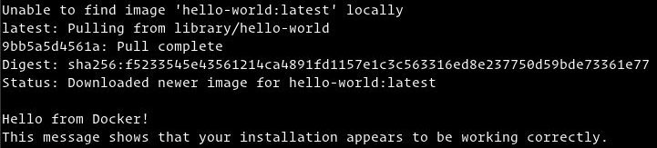

如何在 Debian 10 Linux 上安装和使用 Docker
Docker 是一个容器化平台，允许您快速构建，测试和部署应用程序，作为便携式，自给自足的容器，几乎可以在任何地方运行。
在本教程中，我们将解释如何在 Debian 10 Buster 上安装 Docker 并探索基本的 Docker 概念和命令。
在 Debian 上安装 Docker
执行以下步骤从 Docker 的存储库安装最新的稳定 Docker 版本。
-
安装通过 HTTPS 添加新存储库所需的软件包：
sudo apt update sudo apt install apt-transport-https ca-certificates curl software-properties-common gnupg2 -
使用以下 curl 命令导入存储库的 GPG 密钥：
curl -fsSL https://download.docker.com/linux/debian/gpg | sudo apt-key add -成功后，命令将返回
OK。 -
将稳定的 Docker APT 存储库添加到系统的软件存储库列表中：
sudo add-apt-repository " deb [arch=amd64] https://download.docker.com/linux/debian $(lsb_release -cs) stable "$(lsb_release -cs)将返回 Debian 发行版的名称。在这个例子总，返回的就是buster。 -
更新
apt软件包列表并安装最新版本的 Docker CE(Community Edition) ：sudo apt update sudo apt install docker-ce -
安装完成后， Docker 服务将自动启动。要验证它输入：
sudo systemctl status docker● docker.service - Docker Application Container Engine Loaded: loaded (/lib/systemd/system/docker.service; enabled; vendor preset: enabled) Active: active (running) since Tue 2019-07-30 20:52:00 GMT; 1min 11s ago Docs: https://docs.docker.com ... -
在撰写本文时， Docker 的最新稳定版本是
19.03.1：docker -vDocker version 19.03.1, build 74b1e89
在没有 Sudo 的情况下执行 Docker 命令
默认情况下，只有 root 用户和具有 sudo 权限的用户才能执行 Docker 命令。
如果要在不预先添加 sudo 的情况下执行 Docker 命令，则需要将用户添加到在安装 Docker CE 软件包期间创建的 docker 组。为此，请输入：
sudo usermod -aG docker $USER
$USER 是一个保存用户名的环境变量。
注销并重新登录，以便刷新组成员身份。
完成后，验证您可以运行不带 sudo 的 docker 命令：
docker container run hello-world
该命令将下载测试镜像，在容器中运行，打印 “Hello from Docker” 消息并退出。输出应如下所示：

使用 Docker
现在您已经在 Debian 10 上安装了，让我们来看看基本的 docker 概念和命令。
Docker 镜像
Docker 镜像由一系列文件系统层组成，这些文件系统层代表了镜像的 Dockerfile 中的指令，构成了可执行软件应用程序。镜像是一个不可变的二进制文件，包括应用程序和运行应用程序所需的所有其他依赖项，如库，二进制文件和指令。
Docker Hub 上提供了大多数 Docker 镜像。它是一个基于云的注册服务，用于将 Docker 镜像保存在公共或私有存储库中。
要从 Docker Hub 注册表中搜索镜像，请使用该 docker search 命令。例如，要搜索 Debian 镜像，您可以键入：
docker search debian
Docker 容器
镜像的实例称为容器。容器表示单个应用程序，进程或服务的运行时。
它可能不是最合适的比较，但如果您是程序员，您可以将 Docker 镜像视为类，将 Docker 容器视为类的实例。
要启动，停止，删除和管理容器，请使用该 docker container 命令。例如，以下命令将基于 Debian 镜像启动 Docker 容器。如果您没有本地镜像，将首先下载它：
docker container run debian
Debian 容器将在启动后立即停止，因为它没有长时间运行的进程，也没有提供其他命令。容器启动，运行一个空命令，然后退出。
选项 -it 允许您通过命令行与容器进行交互。要启动交互式容器类型：
docker container run -it debian /bin/bash
root@ee86c8c81b3b:/#
正如您在容器启动时从上面的输出中看到的那样，命令提示符已更改，这意味着您现在正在从容器内部工作：
要列出活动的 Docker 容器，请使用以下命令：
docker container ls
如果您没有任何正在运行的容器，则输出将为空。
要查看活动和非活动容器，请将其传递给 -a 交换机：
docker container ls -a
要删除一个或多个容器，只需复制容器 ID(或者多个 ID) 并在 container rm 命令后粘贴它们：
docker container rm c55680af670c
结论
在 Debian 10 上安装 Docker 是一项相对简单的任务。 Docker 是容器技术的事实上的标准，它是 DevOps 工程师及其持续集成和交付管道的必备工具。